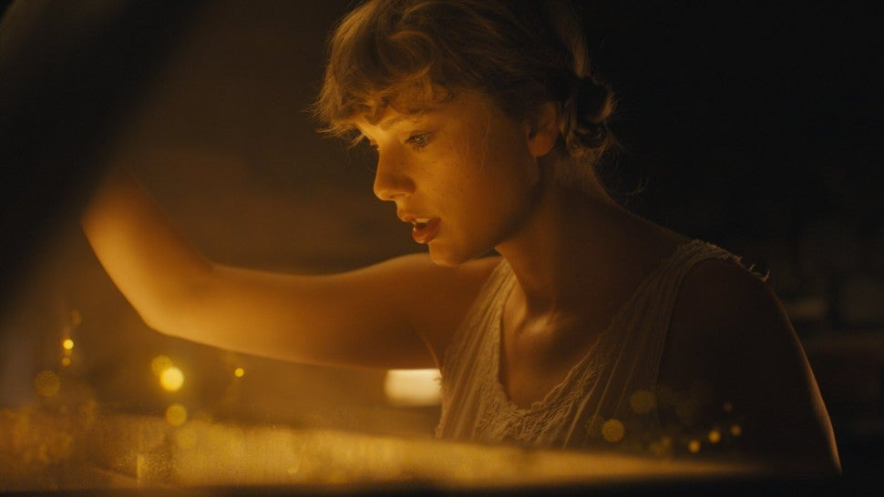

Vintage tee, brand new phone
High heels on cobblestones
When you are young, they assume you know nothing
Sequin smile, black lipstick
Sensual politics
When you are young, they assume you know nothing
But I knew you
Dancin' in your Levi's
Drunk under a streetlight
I, I knew you
Hand under my sweatshirt
Baby, kiss it better, right
And when I felt like I was an old cardigan
Under someone's bed
You put me on and said I was your favorite
A friend to all is a friend to none
Chase two girls, lose the one
When you are young, they assume you know nothing
But I knew you
Playin' hide-and-seek and
Givin' me your weekends
I, I knew you
Your heartbeat on the High Line
Once in twenty lifetimes, I
And when I felt like I was an old cardigan
Under someone's bed
You put me on and said I was your favorite
To kiss in cars and downtown bars
Was all we needed
You drew stars around my scars
But now I'm bleedin'
'Cause I knew you
Steppin' on the last train
Marked me like a bloodstain
I, I knew you
Tried to change the ending
Peter losing Wendy
I, I knew you
Leavin' like a father
Runnin' like water, I
And when you are young, they assume you know nothing
But I knew you'd linger like a tattoo kiss
I knew you'd haunt all of my what-ifs
The smell of smoke would hang around this long
'Cause I knew everything when I was young
I knew I'd curse you for the longest time
Chasing shadows in the grocery line
I knew you'd miss me once the thrill expired
And you'd be standin' in my front porch light
And I knew you'd come back to me
You'd come back to me
And you'd come back to me
And you'd come back
And when I felt like I was an old cardigan
Under someone's bed